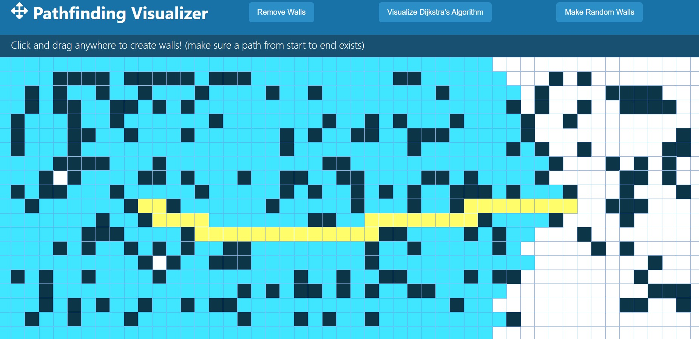
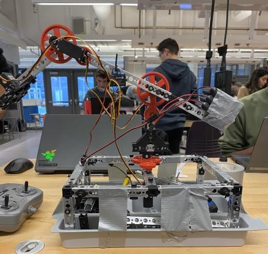

Pathfinding Visualizer
A tool you can use to see Dijkstra's Algorithm in live action. You can generate mazes, make walls and play around with it, all layered with clean animated affects.
View on Github
A tool you can use to see Dijkstra's Algorithm in live action. You can generate mazes, make walls and play around with it, all layered with clean animated affects.
View on GithubA visualizer that allows you to have a nice view of various algorithms, including Quick Sort, Heap Sort, Bubble Sort, and Insertion Sort.
View on Github.JPG)
A robot that can deliver inserted drinks, navigate to a designated table using a node mapping system, process payment, upload the a new card balance to a database, and so much more!
View on Github View on Linkedin
This robot was made in a program competition using extremely limited materials and a time constraint, but it effectively did it's job in picking up and placing plastic bones into a model human!
Learn More